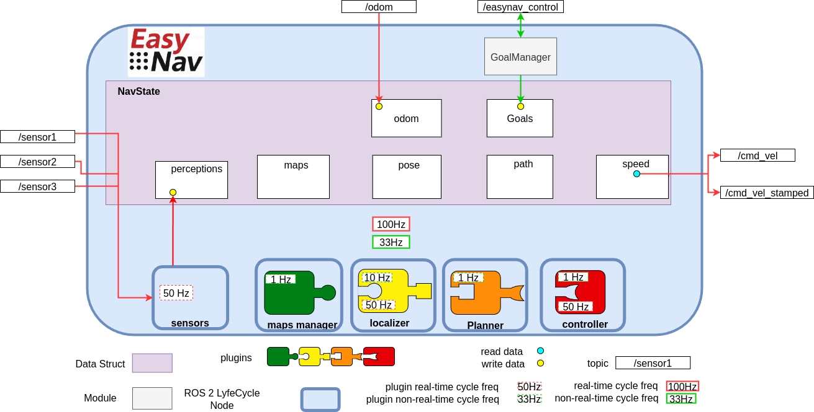
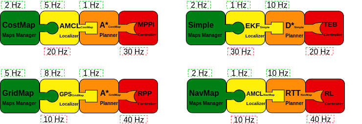
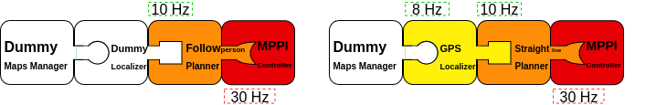

Core Design and Architecture
EasyNav is designed with three core principles in mind: modularity, real-time performance, and extensibility. Its architecture separates concerns into well-defined components, making it both easy to adapt and efficient to execute.

The figure above illustrates the general architecture of EasyNav.
EasyNav runs within a single process that hosts a ROS 2 Lifecycle Node called SystemNode, which coordinates the entire navigation system. Through composition, SystemNode includes several other ROS 2 Lifecycle Nodes, each responsible for a specific function in the navigation pipeline:
Sensors Node: This node collects and preprocesses all sensory input used by the navigation system, across six built-in perception types (point clouds/laser scans, images, IMU, GNSS, odometry, and 3D detections). Sensors are ungrouped by default; they are only placed into a named group when explicitly configured to do so (see Sensor Input and Perception Handling).
MapsManager Node: Responsible for how the environment is represented. It supports multiple plugins that define the actual data structure for the map: costmaps, NavMap triangulated meshes, Bonxai probabilistic voxel maps, octomaps, and simpler binary maps, among others. The plugin selection is configurable depending on the application or use case.
Localizer Node: Estimates the robot’s position within the map. It uses a localization plugin that must be compatible with the type of environment representation used by the MapsManager.
Planner Node: Computes a path from the robot’s current position to its goal (as managed by the GoalManager). The selected plugin determines the planning algorithm used.
Controller Node: Generates velocity commands to follow the planned path. Its functionality is encapsulated in a plugin, which outputs either
TwistorTwistStampedmessages depending on configuration.
An EasyNav application is built by combining multiple plugins from the different EasyNav components. Typical configurations may include combinations such as the following:

This figure illustrates several possible plugin compositions. The key aspect is ensuring that the selected plugins are compatible with one another. For example, if a maps manager based on costmaps is chosen, the remaining plugins must either support this representation or operate independently of it. In practice, the localizer and planner are usually tightly coupled to the representation defined by the maps manager, whereas the controller tends to be more independent, since it typically relies on route formats that are relatively standardized.
It is also possible to use Dummy plugins. Each component provides one in case you want to build an application that does not require that specific functionality. For example, a person-following application may not need either a map or a localizer, while an outdoor navigation application may rely on GPS for localization and simply plan a straight-line path to the target.

These plugin combinations are defined in the single EasyNav configuration file, where the plugins for each component and their execution frequencies are specified.
controller_node:
ros__parameters:
use_sim_time: true
controller_types: [simple]
simple:
rt_freq: 30.0
plugin: easynav_simple_controller/SimpleController
max_linear_speed: 0.6
max_angular_speed: 1.0
look_ahead_dist: 0.2
k_rot: 0.5
localizer_node:
ros__parameters:
use_sim_time: true
localizer_types: [simple]
simple:
rt_freq: 50.0
freq: 5.0
reseed_freq: 1.0
plugin: easynav_simple_localizer/AMCLLocalizer
num_particles: 100
noise_translation: 0.05
noise_rotation: 0.1
noise_translation_to_rotation: 0.1
initial_pose:
x: 0.0
y: 0.0
yaw: 0.0
std_dev_xy: 0.1
std_dev_yaw: 0.01
maps_manager_node:
ros__parameters:
use_sim_time: true
map_types: [simple]
simple:
freq: 10.0
plugin: easynav_simple_maps_manager/SimpleMapsManager
package: easynav_indoor_testcase
map_path_file: maps/home.map
planner_node:
ros__parameters:
use_sim_time: true
planner_types: [simple]
simple:
freq: 0.5
plugin: easynav_simple_planner/SimplePlanner
robot_radius: 0.3
sensors_node:
ros__parameters:
use_sim_time: true
forget_time: 0.5
sensors: [laser1]
laser1:
topic: /scan_raw
type: sensor_msgs/msg/LaserScan
system_node:
ros__parameters:
use_sim_time: true
position_tolerance: 0.1
angle_tolerance: 0.05
Each node declares one or more plugin types (e.g., simple) that can be dynamically selected. The plugin name (e.g., easynav_simple_controller/SimpleController) must match the name registered in the plugin system.
This design allows for easy experimentation with different algorithms or system behaviors simply by modifying configuration files—without changing any source code.
Some applications may not require a full navigation pipeline. For example, systems focused on teleoperation, behavior testing, or hardware validation might not need environment representation, localization, or path planning.
To support such minimal setups, EasyNav provides a Dummy plugin for each core module. These plugins implement the required interfaces but do not perform any real computation. This allows the system to run with minimal overhead while remaining fully compatible with the rest of the EasyNav infrastructure.
Below is an example configuration using dummy plugins for all components, effectively creating a Dummy Navigation System:
controller_node:
ros__parameters:
use_sim_time: true
controller_types: [dummy]
dummy:
rt_freq: 30.0
plugin: easynav_controller/DummyController
cycle_time_rt: 0.001
localizer_node:
ros__parameters:
use_sim_time: true
localizer_types: [dummy]
dummy:
rt_freq: 50.0
freq: 5.0
reseed_freq: 0.1
plugin: easynav_localizer/DummyLocalizer
cycle_time_nort: 0.01
cycle_time_rt: 0.001
maps_manager_node:
ros__parameters:
use_sim_time: true
map_types: [dummy]
dummy:
freq: 10.0
plugin: easynav_maps_manager/DummyMapsManager
cycle_time_nort: 0.1
planner_node:
ros__parameters:
use_sim_time: true
planner_types: [dummy]
dummy:
freq: 1.0
plugin: easynav_planner/DummyPlanner
cycle_time_nort: 0.2
sensors_node:
ros__parameters:
use_sim_time: true
forget_time: 0.5
Note
cycle_time_rt/cycle_time_nort are optional and default to 0.0 (no delay, no CPU
cost) — with them unset, Dummy plugins are as lightweight as the “minimal overhead” description
above implies. When set, they are implemented as a busy-wait, not a sleep: the plugin will
pin a CPU core at ~100% for that duration on every cycle. This is deliberate, so that a Dummy
plugin configured this way simulates a genuinely CPU-bound slow plugin — including its effect on
other SCHED_FIFO real-time work sharing that core — rather than just an equivalent
wall-clock delay. Set these thoughtfully: a large cycle_time_rt relative to rt_freq will
keep a core continuously busy.
- system_node:
- ros__parameters:
use_sim_time: true position_tolerance: 0.1 angle_tolerance: 0.05
This configuration is especially useful for testing system integration, message flow, and user interfaces without requiring sensor data or a simulated robot. You can later replace dummy plugins with functional ones as needed.
Coordinate Frames (TF)
EasyNav follows REP-105 for its frame-naming
convention, and centralizes all frame configuration in a single place: system_node. Rather
than each node or plugin declaring its own frame parameters (an early version of EasyNav had, for
example, a perception_default_frame parameter local to sensors_node), SystemNode
declares six frame parameters once, assembles them into a single TFInfo struct, and pushes it
into RTTFBuffer — a process-wide singleton that is both the shared tf2_ros::Buffer used
for real-time TF lookups and the single source of truth for frame names across EasyNav.
Parameter (on |
Default |
Meaning |
|---|---|---|
|
|
Optional prefix prepended to every frame below; used to give each robot its own TF tree in multi-robot setups (see Multi-Robot Navigation with EasyNav). |
|
|
Global map frame. |
|
|
Odometry frame. |
|
|
Robot base frame. |
|
|
Robot footprint frame (e.g. used by |
|
|
Global/earth-fixed frame used by global estimators (e.g. GNSS-based fusion in
|
On on_configure(), SystemNode reads these six parameters into a TFInfo and calls
RTTFBuffer::getInstance()->set_tf_info(tf_info). If tf_prefix is non-empty, this call
automatically prepends "<tf_prefix>/" to map_frame, odom_frame, robot_frame,
robot_footprint_frame and world_frame — this is how a multi-robot setup gets a fully
namespaced TF tree per robot (r1/base_link, r1/odom, …) from a single tf_prefix: r1
parameter, without spelling out every frame name per robot.
Any node or plugin that needs a frame name reads it from the shared singleton instead of
hardcoding a literal such as "map" or "base_link":
const auto & tf_info = easynav::RTTFBuffer::getInstance()->get_tf_info();
const std::string & map_frame = tf_info.map_frame;
This is why plugins (obstacle filters, localizers, the fused-perception publisher in
SensorsNode, …) always resolve frames through RTTFBuffer::getInstance()->get_tf_info()
rather than through a per-node parameter.
Real-Time Execution Model
Another key feature of EasyNav is its emphasis on real-time performance. The navigation system is designed to react with strict timing constraints, minimizing latency from perception to action.
To achieve this, EasyNav separates execution into two distinct control loops:
Real-Time Cycle This loop is optimized for minimal end-to-end latency. Its goal is to process new sensor data and update the robot’s motion commands as quickly as possible. It includes:
perception input processing,
pose prediction via odometry,
and velocity command generation (e.g.,
TwistorTwistStamped).
Non-Real-Time Cycle This loop handles operations where occasional execution delays are tolerable. Tasks in this loop include:
map updates,
localization corrections based on perception (e.g., particle filter resampling),
and path planning.
Each EasyNav module is configured with a frequency for both real-time and non-real-time cycles. These are specified in the parameters as rt_freq and freq, respectively.
Additionally, when new perception data is received, the real-time cycle is triggered immediately, allowing the system to respond as fast as possible and minimize perception-to-action latency.
This dual-cycle model balances responsiveness with computational stability, ensuring critical actions happen with deterministic timing while less urgent tasks are scheduled opportunistically.